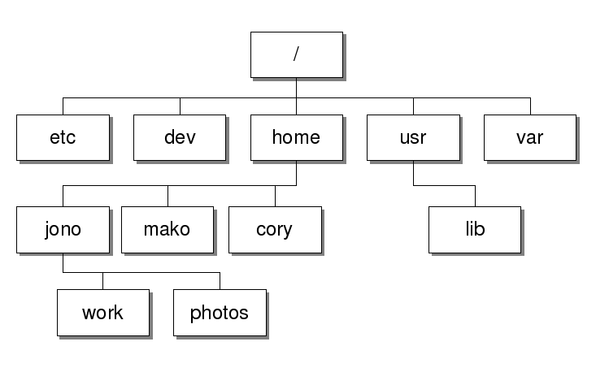

Getting Familiar with the Basics of Linux
When starting out on your Linux journey, there are a few concepts that are keys to working with Linux successfully. In this article, we take a look at some of them including how space is organised in Linux, some basic shell prompts that are useful to know that come in handy with everyday tasks.
Tree Structure of the Linux File System Hierarchy
Linux organizes its space as a file system hierarchy starting with the root folder. All other subfolders are nested inside this root folder (denoted as a / in the figure below). This can be visualized as a tree structure. All users have their own folder under the home folder. When you first start the Linux shell prompt, you are asked to setup a username and password. This becomes your default directory or home directory for all future use.

Use this Linux shell prompt to print the current working directory.
$ pwd
/home/sadafzahra
To explore and view the contents of your working directory ls.
$ ls
code dataUse this shell prompt to navigate to a specified path in the tree structure.
$ cd /foldername To go up one level in the tree structure use the following.
$ cd ..Basic Shell Prompts for common File tasks
Use the following to make a new directory.
$ mkdir directorynameTo create a file use the following commands or shell prompts
$ cat > filename
// press enter to see file content here
// ctrl+ d to escape back into the shell promptTo view the contents of a file use this
$ cat test.txt
test content shown hereAnd to remove a file the following prompts
$ rm filename